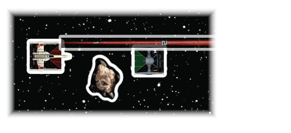

OBSTRUCTED
An attack is obstructed if the attacker measures range through an object. If a ship or device obstructs an attack, there is no inherent effect. If an obstacle obstructs an attack, there is an additional effect.

-
If at least one obstacle obstructs an attack, the defender rolls one additional defense die during the Roll Defense Dice step.
-
The attacker measures from the closest point of its base to the closest point of the defender’s base that is in the attack arc, therefore the attacker cannot measure range from or to another point in order to avoid measuring through an object.
- If multiple points are at equal distance from the attacker (for example, if the attacker and defender are parallel), the attacker chooses one of those lines for measuring range from or to another point in order to avoid measuring through an object.. In the example, the X-wing can choose to make this attack be obstructed or not.